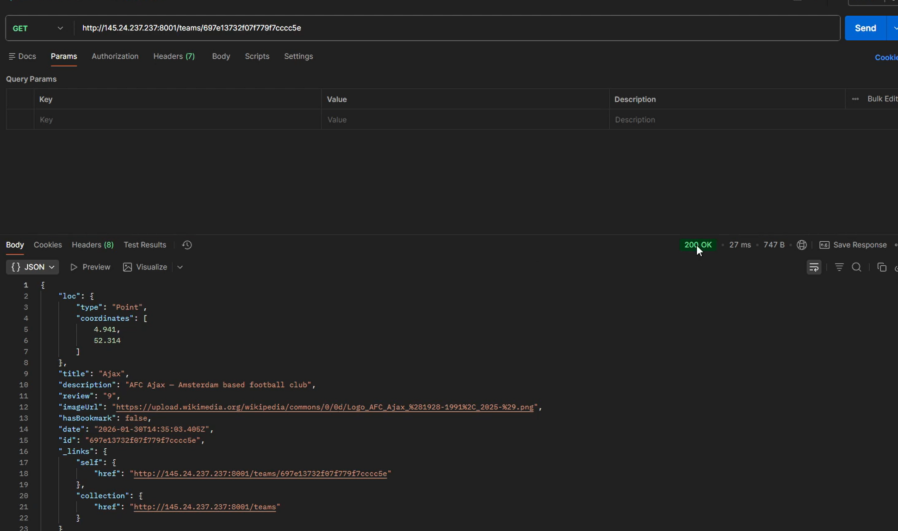

RESTful Webservice
Developed a backend web service that is used in my single webapp project.
- My role
- Backend Developer
- Period
- December 2025 - January 2026
- Technologies
- Javascript, PHP, Mongoose DB

The Assignment
The goal of this project was to develop a RESTful web service. that is used for the frontend single web app assignment
This side of the project focused on the backend side of the application, including the implementation of API functionality and the communication between clients and a server.
What I Did
- Developed the web service as part of the assignment.
- Worked on API endpoints for handling client requests.
- Implemented server-side functionality for processing requests and returning responses.
- Tested the web service to check whether its endpoints behaved as expected.
Result
The result was a RESTful web service developed for the assignment. The project demonstrates my experience with backend development, API design and communication between software components.
What I Learned
I gained practical experience in backend development and learned more about how applications communicate through HTTP requests and API endpoints.
I also gained experience testing API functionality and understanding the role of a backend service within a larger software application.